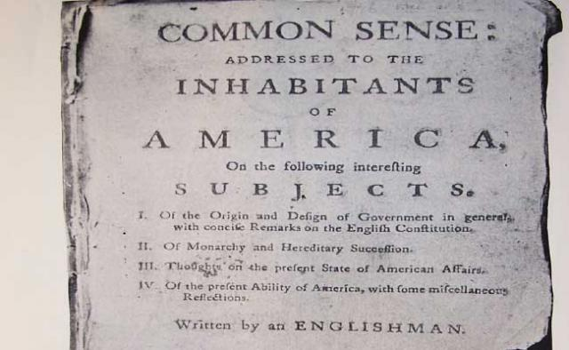

Information Cards Facilitate Grassroots Democracy

Information Cards can Authenticate Online Petitioners While Protecting Anonymity
- In 1215, King John signed the Magna Carta, which recognized the right of the barons to petition the crown.
- In 1775 Thomas Paine wrote in Common Sense that "... frequent interchange ...between the electors and the elected ... will establish a common interest with every part of the community ... they will mutually and naturally support each other, and on this depends the strength of government, and the happiness of the governed."
- By 1789, Founders of the United States embedded the right to petition into the Constitution in the First Amendment: "Congress shall make no law ... abridging ... the right of the people ... to petition the Government for a redress of grievances."
Today petitioning has become an instrument of mass politics, designed to make a point, not a plea. To quote the First Amendment Center:
"Petitioning" has come to signify any nonviolent, legal means of encouraging or disapproving government action. The direct appeal and individualized response that once marked petitioning belong to a more organic past when leaders knew petitioners by name. No branch of the government today is equipped to provide such personal attention.
Sites like The Petition Site provide tools to create online petitions, but you need to fill out the usual form -- name, address, etc. Not only is this work, but by signing a petition, you may create a record that you later regret. To avoid this, you might choose to enter a false address (Beverly Hills 90210). Verifying signatories of an online petition is a laborious and lengthy process.
Who is signing? Children? A hacker who voted 1024 times? Illegal immigrants? Without verification, it is difficult to treat any petition seriously. And if the elected representatives (the target audience) cannot take it seriously, why should they consider it?
The US voting system is designed to authenticate voters, yet preserve their privacy. We go to our designated polling location and are verified as a legal registered voter. We are then given a ballot and are able to vote anonymously. The belief that the vote is verified yet anonymous is at the heart of our democratic process.
Is this possible online as well? The answer is yes, if one is able to verified digital claims about citizens.
Where Information Cards Comes In
Information Cards can support both the veracity and anonymity online petitioners. This was just demonstrated at the eCitizen Identity and Online Civic Engagement Workshop held at the MIT Media Labs on January 15. Though the demo was only a proof of concept, the implications are very real.
Here's how it works. Gateway to Gov.org's site, CivicID, has access to actual voter registration databases. Thus it is equipped to be an Information Card identity provider -- the entity that issues an Information Card to a user. The Civic ID card (shown above) contains claims stating that the residency and registered voter status of the user was verified by CivicID. The user then can use their CivicID card at a site to sign in and perform activities such as asking President Obama a question (American citizens only please), or signing a petition.
For this pilot, two websites were set up to accept these claims: Community Counts and eCitizen Foundation.
CivicID's Information Card contains the following verified claims:
- I am a resident of jurisdiction X (e.g. United States).
- I am a registered voter (in jurisdiction X).
These new claim definitions are in the process of approval by the ICF Claim Schemas Working Group for inclusion in the ICF Claim Catalog.
Downloading and using this card is just like other managed Information Cards. It start with a citizen visiting CivicID as the identity provider and signing up for a CivicID Information Card. The citizen provides a physical address and birth date (the information necessary to link to their record in the appropriate voter registration database). If the information is verified, the card is issued with the supplied claim values set to “true”.
Now, when the citizen wants to sign an online petition, the website as a relying party can request that the citizen sign in with their CivicID Information Card. Since a citizen can only obtain one CivicID card, the website knows the number of unique signatories and whether they are qualified for this particular petition (e.g., a resident of a town petitioning to build a new school). The website knows the signatures are valid, but does not need to know the identity of the signer. So both veracity and anonymity are supported.
Because CivicID cardholders can sign petitions with the verified claim: "I am a valid voter in jurisdiction X," these petitions can carry much greater weight. Any advocacy group that verifies its petition signers with Information Cards is much more likely to be taken seriously.
The demo at MIT was part of an ecitizenfoundation.org forum on identity issues to be raised to the Obama Administration. Information Cards are part of this -- the technology is working today. Verified online claims are starting to be deployed, and this will change everything.
A Change for the Good for Advocacy Groups
The changes likely from Information Cards will not occur all at once, but to gain the following benefits, advocacy groups should start implementing Information Cards now.
- Easier login: Information Cards immediately make a user's life simpler by eliminating passwords and form filling. Since users are verified, there is no need for sites to store any more than a minimum of personal data. This can be passed by the Informaton Card itself, along with a site-specific identifier called a PPID that makes phishing nearly impossible. There is no password to ask for. Even if a user were tricked into submitting an Information Card to a phishing site, it would contain a new PPID specific to that site, and would give the phisher no information or token necessary to attack the real user account on the real website.
- Privacy Protection: People may understandably be reluctant to register as supporters of controversial petitions. With Information Cards they can do so anonymously without fear of reprisal. Of course, this is a basic Constitutional right guaranteed by the First Amendment. However it is much harder to achieve in practice, especially online.
- Verified Petitions: The biggest potential change for grassroots organizers is that a group of like-minded citizens can very quickly and inexpensively create a verifiable online petition to promote an initiative. This creates a new viral channel for democratic action.
Work Still to Do
There is more work to do to move verified claims to certified legal recognition. In the CivicID prototype, a user who knows the address and birth date of another user could acquire another person's CivicID card. Without additional authentication, it would remain a matter of reasonable doubt whether the person submitting the CivicID card was the actual citizen. The identity assurance frameworks established by NIST or proposed by the Liberty Alliance Project could be useful here. For example, stronger authentication might be required for voting for federal representatives, vs. weaker authentication for just voicing an opinion. Signing a petition might lie in between.
Nevertheless, the CivicID eCitizen Information Card demonstrates a powerful new way to respect both the privacy and the legitimacy of registered voters and provides a practical, low-cost way to verify signers of online petitions.

If there had been an Internet in 1775, the first blogger would have been Thomas Paine. Paine wrote "Common Sense", a pamphlet that became the most widely read publication in the Colonies with over 100,000 copies. It is the first document to mention the concept of the "United States" (Paine freely gave the publication rights away.)